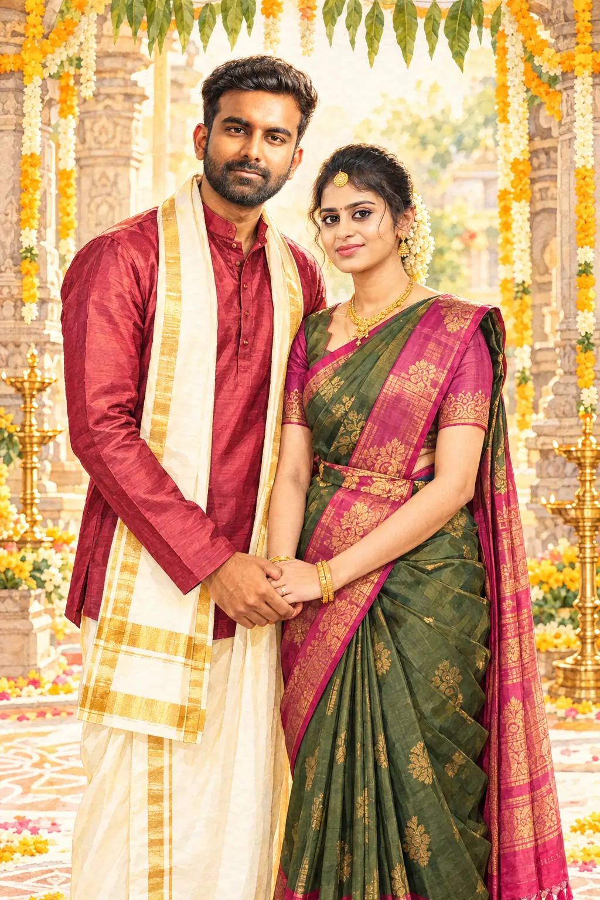

ஞாயிற்றுக்கிழமை
திருமண வரவேற்பு
15நவம்பர்
2026
2026
மாலை 6:30 முதல்
இரவு 9:00 மணி வரை
❁ ஸ்ரீ கணபதியே துணை ❁
மங்களகரமான திருமண அழைப்பிதழ்
இரு இதயங்கள் இணையும் இனிய தருணம்

✿✿15✦16நவம்பர் 2026
அழைப்பிதழைக் காண்க ↓இறைவன் அருளாலும், எங்கள் பெரியோர்களின் ஆசீர்வாதத்தாலும், எங்கள் வாழ்வின் புதிய பயணத்தைத் தொடங்குகிறோம்.
இந்த இனிய திருமண விழாவில் தாங்கள் குடும்பத்துடன் கலந்து கொண்டு மணமக்களை வாழ்த்தி சிறப்பிக்க அன்புடன் அழைக்கிறோம்.
உங்கள் வருகையும் ஆசீர்வாதமும் எங்கள் மகிழ்ச்சியை இரட்டிப்பாக்கும்.
ஞாயிற்றுக்கிழமை
மாலை 6:30 முதல்
இரவு 9:00 மணி வரை
திங்கட்கிழமை
அதிகாலை 5:45 முதல்
காலை 7:00 மணி வரை
கோவை–சேலம் தேசிய நெடுஞ்சாலை,
செங்கப்பள்ளி, திருப்பூர்,
தமிழ்நாடு.
இரு நிகழ்ச்சிகளும் இதே மண்டபத்தில் நடைபெறும்.
உங்கள் அன்பும் ஆசீர்வாதமும்
எங்களுக்கு மிகப் பெரிய பரிசு. ♥
மணமக்களை வாழ்த்த வருக!
WhatsApp-இல் பகிருங்கள் ↗